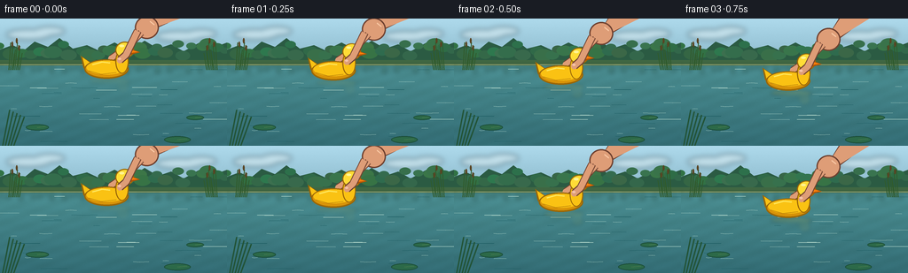
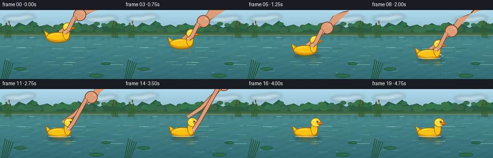
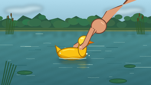

CODING AGENTS AS PIXEL WORLD MODELS
traex/GPT-5.6-Sol · mechanics_0011
点击播放 · 原生 RGB 像素
逐轮保存的候选
回放视频、检查图与代码变化。
每份候选均可单独播放。实际图片检查记录在下方工具轨迹中。
候选 01播放与检查图
点击播放 · 原生 RGB 像素


展开代码变化
--- 上一保存版本
+++ 本次保存版本
@@ -0,0 +1,283 @@
+from pathlib import Path
+import math
+import numpy as np
+from PIL import Image, ImageDraw, ImageFilter
+import artifact_io
+
+# PixelWorld case: hand places a molded plastic duck onto a pond.
+W, H, N = 256, 144, 20
+S = 4
+SW, SH = W*S, H*S
+
+
+def sc(v):
+ return int(round(v*S))
+
+
+def pts(seq):
+ return [(sc(x), sc(y)) for x, y in seq]
+
+
+def ease(x):
+ x = max(0.0, min(1.0, x))
+ return x*x*(3.0-2.0*x)
+
+
+def ellipse(draw, box, fill, outline=None, width=1):
+ draw.ellipse(tuple(sc(x) for x in box), fill=fill, outline=outline, width=sc(width) if outline else 1)
+
+
+def line(draw, seq, fill, width=1, joint='curve'):
+ draw.line(pts(seq), fill=fill, width=sc(width), joint=joint)
+
+
+def make_base(frame):
+ # Stable photographic-style gradients with tiny animated caustics.
+ t = frame / 4.0
+ yy, xx = np.mgrid[0:SH, 0:SW]
+ y = yy / S
+ x = xx / S
+ sky = y < 51
+ a = np.zeros((SH, SW, 3), dtype=np.float32)
+ sy = np.clip(y / 51.0, 0, 1)
+ a[..., 0] = 174 - 35*sy
+ a[..., 1] = 218 - 34*sy
+ a[..., 2] = 236 - 34*sy
+ wy = np.clip((y-50)/94, 0, 1)
+ # Green-blue pond, darker toward camera, with low-amplitude moving wave light.
+ wave = 3.0*np.sin(x*0.18 + y*0.48 + t*0.9) + 1.8*np.sin(x*0.055-y*0.31-t*0.7)
+ water_rgb = np.stack([
+ 75 - 24*wy + wave*0.35,
+ 142 - 34*wy + wave*0.60,
+ 145 - 29*wy + wave*0.75], axis=-1)
+ a = np.where(sky[...,None], a, water_rgb)
+ # Fine deterministic texture avoids flat CGI surfaces without flicker.
+ rng = np.random.default_rng(411)
+ noise = rng.normal(0, 1.15, (SH, SW, 1))
+ a += noise
+ return Image.fromarray(np.uint8(np.clip(a, 0, 255)), 'RGB').convert('RGBA')
+
+
+def draw_background(im, frame):
+ d = ImageDraw.Draw(im, 'RGBA')
+ t = frame/4.0
+ # Soft clouds.
+ cloud = Image.new('RGBA', (SW, SH), (0,0,0,0)); c = ImageDraw.Draw(cloud, 'RGBA')
+ for cx,cy,rx,ry in [(32,18,25,6),(56,14,17,5),(202,20,26,6),(227,17,17,5)]:
+ ellipse(c, (cx-rx,cy-ry,cx+rx,cy+ry), (247,251,249,95))
+ cloud = cloud.filter(ImageFilter.GaussianBlur(sc(3)))
+ im.alpha_composite(cloud)
+ d = ImageDraw.Draw(im, 'RGBA')
+ # Distant tree line and banks, reflected immediately below shore.
+ d.polygon(pts([(0,48),(0,35),(14,30),(27,36),(39,26),(54,32),(67,22),(82,34),
+ (98,30),(111,36),(129,27),(146,36),(163,25),(178,34),(193,29),
+ (207,37),(225,27),(240,33),(256,27),(256,51)]), fill=(43,91,67,255))
+ # Tree crowns, layered for organic silhouette.
+ rng=np.random.default_rng(22)
+ for i in range(29):
+ cx=float(i*9+rng.uniform(-4,4)); cy=float(rng.uniform(28,42)); r=float(rng.uniform(5,11))
+ ellipse(d,(cx-r,cy-r*.65,cx+r,cy+r*.65),(45+rng.integers(0,18),101+rng.integers(0,20),68+rng.integers(0,12),245))
+ d.rectangle((0,sc(47),SW,sc(53)), fill=(65,104,67,255))
+ line(d,[(0,52),(256,52)],(180,194,134,120),1)
+ # Blurred vertical tree reflections.
+ refl=Image.new('RGBA',(SW,SH),(0,0,0,0)); rd=ImageDraw.Draw(refl,'RGBA')
+ for i in range(0,256,7):
+ h=6+4*math.sin(i*.37)
+ rd.rectangle((sc(i),sc(52),sc(i+5),sc(52+h)),fill=(40,90,65,70))
+ refl=refl.filter(ImageFilter.GaussianBlur(sc(2.2))); im.alpha_composite(refl)
+ d=ImageDraw.Draw(im,'RGBA')
+ # Horizontal glints and wavelets (coherent, gently moving).
+ rng=np.random.default_rng(105)
+ for i in range(43):
+ yy=float(rng.uniform(56,141)); length=float(rng.uniform(5,30)); x0=float(rng.uniform(-10,250))
+ drift=math.sin(t*.7+i)*1.2
+ col=(190,225,211,int(20+35*(1-(yy-56)/90))) if i%3 else (23,88,94,45)
+ line(d,[(x0+drift,yy),(x0+length*.45,yy+math.sin(i)*.45),(x0+length,yy)],col,0.6)
+ # Reeds on banks and near corners add pond specificity and depth.
+ for side in ('l','r'):
+ base_x = 10 if side=='l' else 245
+ sign = 1 if side=='l' else -1
+ for j in range(8):
+ bx=base_x+sign*j*1.7; topy=27+(j%4)*4
+ line(d,[(bx,58),(bx+sign*(2+j%3),topy)],(48,91,45,210),1.0)
+ if j in (1,4,6):
+ ellipse(d,(bx+sign*(1+j%3)-1,topy-5,bx+sign*(1+j%3)+1,topy+1),(89,67,34,220))
+ # Foreground reeds, intentionally partially cropped.
+ for j in range(5):
+ bx=3+j*3.1
+ line(d,[(bx,144),(bx+8+j,103+j*2)],(34,83,54,185),1.4)
+ # Lily pads, not competing with center action.
+ for cx,cy,rx in [(42,123,13),(220,112,10),(200,137,15)]:
+ ellipse(d,(cx-rx,cy-rx*.27,cx+rx,cy+rx*.27),(44,105,72,190),(28,79,58,110),1)
+ line(d,[(cx,cy),(cx+rx*.72,cy-1)],(107,145,85,120),.6)
+
+
+def draw_ripples(im, frame, cx, cy):
+ if frame < 7: return
+ age=(frame-7)/4.0
+ layer=Image.new('RGBA',(SW,SH),(0,0,0,0)); d=ImageDraw.Draw(layer,'RGBA')
+ # Three successive, physically expanding rings, foreshortened by perspective.
+ for k in range(3):
+ local=age-k*.34
+ if local <= 0: continue
+ radius=9+28*local
+ alpha=int(max(0,120-42*local))
+ box=(cx-radius,cy-radius*.16,cx+radius,cy+radius*.16)
+ ellipse(d,box,(0,0,0,0),(210,238,220,alpha),.75)
+ # darker undersurface makes rings visible against both light and dark waves
+ ellipse(d,(box[0],box[1]+1.1,box[2],box[3]+1.1),(0,0,0,0),(20,91,91,alpha//2),.55)
+ layer=layer.filter(ImageFilter.GaussianBlur(sc(.22)))
+ im.alpha_composite(layer)
+
+
+def duck_position(frame):
+ # Lowering is finished at frame 7. Afterwards buoyancy gives a damped bob.
+ if frame <= 7:
+ p=ease(frame/7.0)
+ return 124-2*(1-p), 57+34*p
+ age=(frame-7)/4.0
+ bob=2.3*math.exp(-age*.85)*math.sin(age*math.pi*2.15)
+ drift=1.6*(1-math.exp(-age*.55))
+ return 124+drift, 91+bob
+
+
+def draw_reflection(im, frame, cx, cy):
+ # Reflection strengthens as the toy approaches/touches the surface.
+ if frame <= 7: proximity=ease(frame/7)
+ else: proximity=1.0
+ layer=Image.new('RGBA',(SW,SH),(0,0,0,0)); d=ImageDraw.Draw(layer,'RGBA')
+ alpha=int(22+55*proximity)
+ ellipse(d,(cx-22,cy+10,cx+25,cy+17),(202,162,26,alpha))
+ ellipse(d,(cx+10,cy+15,cx+23,cy+27),(201,159,27,alpha//2))
+ # Water breaks the reflection into horizontal strips.
+ for yy in [cy+15,cy+19,cy+23]:
+ line(d,[(cx-18+(yy-cy)*.3,yy),(cx+21-(yy-cy)*.15,yy)],(119,139,59,alpha//2),1)
+ layer=layer.filter(ImageFilter.GaussianBlur(sc(2.0)))
+ im.alpha_composite(layer)
+
+
+def draw_hand_back(im, frame, cx, cy):
+ if frame >= 15: return None
+ if frame <= 7:
+ q=0.0
+ else:
+ q=ease((frame-7)/8.0)
+ # The palm follows the toy while gripping, then withdraws upward-right.
+ gripx, gripy = cx+8, cy-10
+ liftx, lifty = 42*q, -55*q
+ palm=(cx+43+liftx, cy-47+lifty)
+ wrist=(cx+68+liftx, cy-74+lifty)
+ d=ImageDraw.Draw(im,'RGBA')
+ outline=(111,65,48,255); skin=(222,157,119,255); light=(241,184,144,255); shadow=(187,113,85,255)
+ # Forearm tapered to upper-right edge.
+ poly=[(wrist[0]-12,wrist[1]+2),(wrist[0]+9,wrist[1]-7),(256,-10),(222,-10),
+ (palm[0]+9,palm[1]+2),(palm[0]-8,palm[1]+9)]
+ d.polygon(pts(poly),fill=outline)
+ inner=[(wrist[0]-10,wrist[1]+1),(wrist[0]+7,wrist[1]-5),(253,-8),(225,-8),
+ (palm[0]+7,palm[1]+1),(palm[0]-7,palm[1]+7)]
+ d.polygon(pts(inner),fill=skin)
+ ellipse(d,(palm[0]-13,palm[1]-13,palm[0]+14,palm[1]+13),outline)
+ ellipse(d,(palm[0]-11.5,palm[1]-11.5,palm[0]+12.5,palm[1]+11.5),skin)
+ # Index finger lies behind duck. It opens away after release.
+ open_sep=13*q
+ p1=(palm[0]-6,palm[1]+6)
+ p2=(cx+22+liftx*.35,cy-25+lifty*.25-open_sep)
+ p3=(gripx-5+liftx*.2,gripy-2+lifty*.18-open_sep)
+ line(d,[p1,p2,p3],outline,8.0)
+ line(d,[p1,p2,p3],skin,6.0)
+ ellipse(d,(p3[0]-3,p3[1]-3,p3[0]+3,p3[1]+3),skin)
+ # Palm highlight.
+ line(d,[(palm[0]+4,palm[1]-7),(palm[0]+9,palm[1]-3)],(250,201,165,150),1.2)
+ return q
+
+
+def draw_duck(im, frame, cx, cy):
+ d=ImageDraw.Draw(im,'RGBA')
+ # Soft contact shadow only when near the water.
+ if frame >= 5:
+ sh=Image.new('RGBA',(SW,SH),(0,0,0,0)); sd=ImageDraw.Draw(sh,'RGBA')
+ ellipse(sd,(cx-27,cy+7,cx+31,cy+15),(11,53,65,75))
+ sh=sh.filter(ImageFilter.GaussianBlur(sc(2.4))); im.alpha_composite(sh); d=ImageDraw.Draw(im,'RGBA')
+ outline=(154,103,8,255); dark=(216,147,8,255); yellow=(250,194,19,255); light=(255,220,54,255)
+ # Tail and rounded hollow plastic body.
+ d.polygon(pts([(cx-19,cy-7),(cx-31,cy-15),(cx-28,cy-1),(cx-20,cy+3)]),fill=outline)
+ d.polygon(pts([(cx-19,cy-6),(cx-29,cy-13),(cx-26,cy-1),(cx-18,cy+2)]),fill=yellow)
+ ellipse(d,(cx-27,cy-11,cx+23,cy+11),outline)
+ ellipse(d,(cx-25.5,cy-9.8,cx+21.5,cy+9.3),dark)
+ ellipse(d,(cx-24.5,cy-9.5,cx+20.5,cy+6.2),yellow)
+ # Chest/neck connects head cleanly to body.
+ ellipse(d,(cx+8,cy-22,cx+23,cy+5),outline)
+ ellipse(d,(cx+9.2,cy-21,cx+21.8,cy+4),yellow)
+ # Head.
+ ellipse(d,(cx+8,cy-31,cx+29,cy-12),outline)
+ ellipse(d,(cx+9.2,cy-29.8,cx+27.8,cy-13.2),light)
+ # Orange beak facing right.
+ d.polygon(pts([(cx+25,cy-23),(cx+36,cy-19),(cx+25,cy-16),(cx+21,cy-19)]),fill=(171,83,7,255))
+ d.polygon(pts([(cx+25,cy-22),(cx+34,cy-19.2),(cx+24,cy-18),(cx+21,cy-19.4)]),fill=(246,126,10,255))
+ # Eye and molded glossy highlights.
+ ellipse(d,(cx+20,cy-25,cx+23.7,cy-21.3),(54,47,31,255))
+ ellipse(d,(cx+21,cy-24.5,cx+22,cy-23.4),(255,255,239,255))
+ ellipse(d,(cx+12.5,cy-27.5,cx+18,cy-24.8),(255,244,148,180))
+ line(d,[(cx-18,cy-5),(cx-7,cy-8),(cx+2,cy-7)],(255,231,93,210),1.5)
+ # Mold seam indicates plastic manufacture.
+ line(d,[(cx-22,cy+2),(cx-8,cy+6),(cx+9,cy+4)],(177,119,8,130),.7)
+
+
+def draw_hand_front(im, frame, cx, cy, q):
+ if q is None: return
+ d=ImageDraw.Draw(im,'RGBA')
+ skin=(222,157,119,255); outline=(111,65,48,255); nail=(244,195,171,255)
+ liftx,lifty=42*q,-55*q
+ palm=(cx+43+liftx,cy-47+lifty)
+ open_sep=15*q
+ # Thumb in front of toy; visibly opens at release.
+ p1=(palm[0]-10,palm[1]+4)
+ p2=(cx+20+liftx*.35,cy-16+lifty*.25+open_sep*.25)
+ p3=(cx+13+liftx*.2,cy-10+lifty*.18+open_sep)
+ line(d,[p1,p2,p3],outline,9.0)
+ line(d,[p1,p2,p3],skin,6.8)
+ ellipse(d,(p3[0]-3.3,p3[1]-3.4,p3[0]+3.3,p3[1]+3.4),skin)
+ # Small nail on the thumb tip.
+ ellipse(d,(p3[0]-2.2,p3[1]-2.7,p3[0]+1.5,p3[1]-.2),nail)
+
+
+def add_contact_waterline(im, frame, cx, cy):
+ if frame < 7: return
+ d=ImageDraw.Draw(im,'RGBA')
+ strength=min(1,(frame-6)/3)
+ # Water laps over the very bottom edge, selling flotation instead of hovering.
+ line(d,[(cx-24,cy+7),(cx-14,cy+8.4),(cx-3,cy+7.6),(cx+12,cy+8.8),(cx+22,cy+7.3)],
+ (207,235,217,int(190*strength)),1.2)
+ line(d,[(cx-16,cy+10.3),(cx-4,cy+9.8),(cx+9,cy+10.6)],(29,101,104,int(110*strength)),.8)
+ if frame in (7,8):
+ # Tiny displacement droplets at first touch.
+ for dx,dy,r in [(-22,-1,1),(23,0,1.2),(27,3,.8)]:
+ ellipse(d,(cx+dx-r,cy+dy-r,cx+dx+r,cy+dy+r),(217,239,221,190))
+
+
+def render_frame(frame):
+ im=make_base(frame)
+ draw_background(im,frame)
+ cx,cy=duck_position(frame)
+ draw_reflection(im,frame,cx,cy)
+ draw_ripples(im,frame,cx,cy+10)
+ q=draw_hand_back(im,frame,cx,cy)
+ draw_duck(im,frame,cx,cy)
+ draw_hand_front(im,frame,cx,cy,q)
+ add_contact_waterline(im,frame,cx,cy)
+ # Mild final resampling creates clean anti-aliased edges.
+ rgb=im.convert('RGB').resize((W,H),Image.Resampling.LANCZOS)
+ return np.asarray(rgb,dtype=np.uint8)
+
+
+def main():
+ frames=np.stack([render_frame(i) for i in range(N)],axis=0)
+ case_dir=Path(__file__).resolve().parent
+ artifact_io.save(frames,case_dir)
+ # Convenient animated preview; the benchmark artifact remains pixels.npz/index.html.
+ imgs=[Image.fromarray(f) for f in frames]
+ imgs[0].save(case_dir/'preview.gif',save_all=True,append_images=imgs[1:],duration=250,loop=0,optimize=False)
+ print('saved',frames.shape,frames.dtype,'range',int(frames.min()),int(frames.max()))
+
+if __name__=='__main__':
+ main()
可观测工具轨迹
实际执行的命令与返回图片。
命令 1exit 0
/bin/bash -lc "cat prompt.txt && printf '\\n--- GENERATION_RULES ---\\n' && cat GENERATION_RULES.md"
命令 2exit 0
/bin/bash -lc "cat task_spec.json && printf '\\n--- FILES ---\\n' && find . -maxdepth 2 -type f -printf '%p\\n' | sort"
命令 3exit 0
/bin/bash -lc "command -v ffmpeg; command -v blender; command -v python3; python3 - <<'PY' mods=['cv2','numpy','PIL','moviepy','imageio','moderngl'] for m in mods: try: x=__import__(m); print(m,'OK',getattr(x,'__version__','')) except Exception as e: print(m,'NO',str(e)[:80]) PY"
命令 4exit 0
/bin/bash -lc 'cat artifact_io.py'
命令 5exit 0
/bin/bash -lc "cat > generate.py <<'PY'
from pathlib import Path
import math
import numpy as np
from PIL import Image, ImageDraw, ImageFilter
import artifact_io
# PixelWorld case: hand places a molded plastic duck onto a pond.
W, H, N = 256, 144, 20
S = 4
SW, SH = W*S, H*S
def sc(v):
return int(round(v*S))
def pts(seq):
return [(sc(x), sc(y)) for x, y in seq]
def ease(x):
x = max(0.0, min(1.0, x))
return x*x*(3.0-2.0*x)
def ellipse(draw, box, fill, outline=None, width=1):
draw.ellipse(tuple(sc(x) for x in box), fill=fill, outline=outline, width=sc(width) if outline else 1)
def line(draw, seq, fill, width=1, joint='curve'):
draw.line(pts(seq), fill=fill, width=sc(width), joint=joint)
def make_base(frame):
# Stable photographic-style gradients with tiny animated caustics.
t = frame / 4.0
yy, xx = np.mgrid[0:SH, 0:SW]
y = yy / S
x = xx / S
sky = y < 51
a = np.zeros((SH, SW, 3), dtype=np.float32)
sy = np.clip(y / 51.0, 0, 1)
a[..., 0] = 174 - 35*sy
a[..., 1] = 218 - 34*sy
a[..., 2] = 236 - 34*sy
wy = np.clip((y-50)/94, 0, 1)
# Green-blue pond, darker toward camera, with low-amplitude moving wave light.
wave = 3.0*np.sin(x*0.18 + y*0.48 + t*0.9) + 1.8*np.sin(x*0.055-y*0.31-t*0.7)
water_rgb = np.stack([
75 - 24*wy + wave*0.35,
142 - 34*wy + wave*0.60,
145 - 29*wy + wave*0.75], axis=-1)
a = np.where(sky[...,None], a, water_rgb)
# Fine deterministic texture avoids flat CGI surfaces without flicker.
rng = np.random.default_rng(411)
noise = rng.normal(0, 1.15, (SH, SW, 1))
a += noise
return Image.fromarray(np.uint8(np.clip(a, 0, 255)), 'RGB').convert('RGBA')
def draw_background(im, frame):
d = ImageDraw.Draw(im, 'RGBA')
t = frame/4.0
# Soft clouds.
cloud = Image.new('RGBA', (SW, SH), (0,0,0,0)); c = ImageDraw.Draw(cloud, 'RGBA')
for cx,cy,rx,ry in [(32,18,25,6),(56,14,17,5),(202,20,26,6),(227,17,17,5)]:
ellipse(c, (cx-rx,cy-ry,cx+rx,cy+ry), (247,251,249,95))
cloud = cloud.filter(ImageFilter.GaussianBlur(sc(3)))
im.alpha_composite(cloud)
d = ImageDraw.Draw(im, 'RGBA')
# Distant tree line and banks, reflected immediately below shore.
d.polygon(pts([(0,48),(0,35),(14,30),(27,36),(39,26),(54,32),(67,22),(82,34),
(98,30),(111,36),(129,27),(146,36),(163,25),(178,34),(193,29),
(207,37),(225,27),(240,33),(256,27),(256,51)]), fill=(43,91,67,255))
# Tree crowns, layered for organic silhouette.
rng=np.random.default_rng(22)
for i in range(29):
cx=float(i*9+rng.uniform(-4,4)); cy=float(rng.uniform(28,42)); r=float(rng.uniform(5,11))
ellipse(d,(cx-r,cy-r*.65,cx+r,cy+r*.65),(45+rng.integers(0,18),101+rng.integers(0,20),68+rng.integers(0,12),245))
d.rectangle((0,sc(47),SW,sc(53)), fill=(65,104,67,255))
line(d,[(0,52),(256,52)],(180,194,134,120),1)
# Blurred vertical tree reflections.
refl=Image.new('RGBA',(SW,SH),(0,0,0,0)); rd=ImageDraw.Draw(refl,'RGBA')
for i in range(0,256,7):
h=6+4*math.sin(i*.37)
rd.rectangle((sc(i),sc(52),sc(i+5),sc(52+h)),fill=(40,90,65,70))
refl=refl.filter(ImageFilter.GaussianBlur(sc(2.2))); im.alpha_composite(refl)
d=ImageDraw.Draw(im,'RGBA')
# Horizontal glints and wavelets (coherent, gently moving).
rng=np.random.default_rng(105)
for i in range(43):
yy=float(rng.uniform(56,141)); length=float(rng.uniform(5,30)); x0=float(rng.uniform(-10,250))
drift=math.sin(t*.7+i)*1.2
col=(190,225,211,int(20+35*(1-(yy-56)/90))) if i%3 else (23,88,94,45)
line(d,[(x0+drift,yy),(x0+length*.45,yy+math.sin(i)*.45),(x0+length,yy)],col,0.6)
# Reeds on banks and near corners add pond specificity and depth.
for side in ('l','r'):
base_x = 10 if side=='l' else 245
sign = 1 if side=='l' else -1
for j in range(8):
bx=base_x+sign*j*1.7; topy=27+(j%4)*4
line(d,[(bx,58),(bx+sign*(2+j%3),topy)],(48,91,45,210),1.0)
if j in (1,4,6):
ellipse(d,(bx+sign*(1+j%3)-1,topy-5,bx+sign*(1+j%3)+1,topy+1),(89,67,34,220))
# Foreground reeds, intentionally partially cropped.
for j in range(5):
bx=3+j*3.1
line(d,[(bx,144),(bx+8+j,103+j*2)],(34,83,54,185),1.4)
# Lily pads, not competing with center action.
for cx,cy,rx in [(42,123,13),(220,112,10),(200,137,15)]:
ellipse(d,(cx-rx,cy-rx*.27,cx+rx,cy+rx*.27),(44,105,72,190),(28,79,58,110),1)
line(d,[(cx,cy),(cx+rx*.72,cy-1)],(107,145,85,120),.6)
def draw_ripples(im, frame, cx, cy):
if frame < 7: return
age=(frame-7)/4.0
layer=Image.new('RGBA',(SW,SH),(0,0,0,0)); d=ImageDraw.Draw(layer,'RGBA')
# Three successive, physically expanding rings, foreshortened by perspective.
for k in range(3):
local=age-k*.34
if local <= 0: continue
radius=9+28*local
alpha=int(max(0,120-42*local))
box=(cx-radius,cy-radius*.16,cx+radius,cy+radius*.16)
ellipse(d,box,(0,0,0,0),(210,238,220,alpha),.75)
# darker undersurface makes rings visible against both light and dark waves
ellipse(d,(box[0],box[1]+1.1,box[2],box[3]+1.1),(0,0,0,0),(20,91,91,alpha//2),.55)
layer=layer.filter(ImageFilter.GaussianBlur(sc(.22)))
im.alpha_composite(layer)
def duck_position(frame):
# Lowering is finished at frame 7. Afterwards buoyancy gives a damped bob.
if frame <= 7:
p=ease(frame/7.0)
return 124-2*(1-p), 57+34*p
age=(frame-7)/4.0
bob=2.3*math.exp(-age*.85)*math.sin(age*math.pi*2.15)
drift=1.6*(1-math.exp(-age*.55))
return 124+drift, 91+bob
def draw_reflection(im, frame, cx, cy):
# Reflection strengthens as the toy approaches/touches the surface.
if frame <= 7: proximity=ease(frame/7)
else: proximity=1.0
layer=Image.new('RGBA',(SW,SH),(0,0,0,0)); d=ImageDraw.Draw(layer,'RGBA')
alpha=int(22+55*proximity)
ellipse(d,(cx-22,cy+10,cx+25,cy+17),(202,162,26,alpha))
ellipse(d,(cx+10,cy+15,cx+23,cy+27),(201,159,27,alpha//2))
# Water breaks the reflection into horizontal strips.
for yy in [cy+15,cy+19,cy+23]:
line(d,[(cx-18+(yy-cy)*.3,yy),(cx+21-(yy-cy)*.15,yy)],(119,139,59,alpha//2),1)
layer=layer.filter(ImageFilter.GaussianBlur(sc(2.0)))
im.alpha_composite(layer)
def draw_hand_back(im, frame, cx, cy):
if frame >= 15: return None
if frame <= 7:
q=0.0
else:
q=ease((frame-7)/8.0)
# The palm follows the toy while gripping, then withdraws upward-right.
gripx, gripy = cx+8, cy-10
liftx, lifty = 42*q, -55*q
palm=(cx+43+liftx, cy-47+lifty)
wrist=(cx+68+liftx, cy-74+lifty)
d=ImageDraw.Draw(im,'RGBA')
outline=(111,65,48,255); skin=(222,157,119,255); light=(241,184,144,255); shadow=(187,113,85,255)
# Forearm tapered to upper-right edge.
poly=[(wrist[0]-12,wrist[1]+2),(wrist[0]+9,wrist[1]-7),(256,-10),(222,-10),
(palm[0]+9,palm[1]+2),(palm[0]-8,palm[1]+9)]
d.polygon(pts(poly),fill=outline)
inner=[(wrist[0]-10,wrist[1]+1),(wrist[0]+7,wrist[1]-5),(253,-8),(225,-8),
(palm[0]+7,palm[1]+1),(palm[0]-7,palm[1]+7)]
d.polygon(pts(inner),fill=skin)
ellipse(d,(palm[0]-13,palm[1]-13,palm[0]+14,palm[1]+13),outline)
ellipse(d,(palm[0]-11.5,palm[1]-11.5,palm[0]+12.5,palm[1]+11.5),skin)
# Index finger lies behind duck. It opens away after release.
open_sep=13*q
p1=(palm[0]-6,palm[1]+6)
p2=(cx+22+liftx*.35,cy-25+lifty*.25-open_sep)
p3=(gripx-5+liftx*.2,gripy-2+lifty*.18-open_sep)
line(d,[p1,p2,p3],outline,8.0)
line(d,[p1,p2,p3],skin,6.0)
ellipse(d,(p3[0]-3,p3[1]-3,p3[0]+3,p3[1]+3),skin)
# Palm highlight.
line(d,[(palm[0]+4,palm[1]-7),(palm[0]+9,palm[1]-3)],(250,201,165,150),1.2)
return q
def draw_duck(im, frame, cx, cy):
d=ImageDraw.Draw(im,'RGBA')
# Soft contact shadow only when near the water.
if frame >= 5:
sh=Image.new('RGBA',(SW,SH),(0,0,0,0)); sd=ImageDraw.Draw(sh,'RGBA')
ellipse(sd,(cx-27,cy+7,cx+31,cy+15),(11,53,65,75))
sh=sh.filter(ImageFilter.GaussianBlur(sc(2.4))); im.alpha_composite(sh); d=ImageDraw.Draw(im,'RGBA')
outline=(154,103,8,255); dark=(216,147,8,255); yellow=(250,194,19,255); light=(255,220,54,255)
# Tail and rounded hollow plastic body.
d.polygon(pts([(cx-19,cy-7),(cx-31,cy-15),(cx-28,cy-1),(cx-20,cy+3)]),fill=outline)
d.polygon(pts([(cx-19,cy-6),(cx-29,cy-13),(cx-26,cy-1),(cx-18,cy+2)]),fill=yellow)
ellipse(d,(cx-27,cy-11,cx+23,cy+11),outline)
ellipse(d,(cx-25.5,cy-9.8,cx+21.5,cy+9.3),dark)
ellipse(d,(cx-24.5,cy-9.5,cx+20.5,cy+6.2),yellow)
# Chest/neck connects head cleanly to body.
ellipse(d,(cx+8,cy-22,cx+23,cy+5),outline)
ellipse(d,(cx+9.2,cy-21,cx+21.8,cy+4),yellow)
# Head.
ellipse(d,(cx+8,cy-31,cx+29,cy-12),outline)
ellipse(d,(cx+9.2,cy-29.8,cx+27.8,cy-13.2),light)
# Orange beak facing right.
d.polygon(pts([(cx+25,cy-23),(cx+36,cy-19),(cx+25,cy-16),(cx+21,cy-19)]),fill=(171,83,7,255))
d.polygon(pts([(cx+25,cy-22),(cx+34,cy-19.2),(cx+24,cy-18),(cx+21,cy-19.4)]),fill=(246,126,10,255))
# Eye and molded glossy highlights.
ellipse(d,(cx+20,cy-25,cx+23.7,cy-21.3),(54,47,31,255))
ellipse(d,(cx+21,cy-24.5,cx+22,cy-23.4),(255,255,239,255))
ellipse(d,(cx+12.5,cy-27.5,cx+18,cy-24.8),(255,244,148,180))
line(d,[(cx-18,cy-5),(cx-7,cy-8),(cx+2,cy-7)],(255,231,93,210),1.5)
# Mold seam indicates plastic manufacture.
line(d,[(cx-22,cy+2),(cx-8,cy+6),(cx+9,cy+4)],(177,119,8,130),.7)
def draw_hand_front(im, frame, cx, cy, q):
if q is None: return
d=ImageDraw.Draw(im,'RGBA')
skin=(222,157,119,255); outline=(111,65,48,255); nail=(244,195,171,255)
liftx,lifty=42*q,-55*q
palm=(cx+43+liftx,cy-47+lifty)
open_sep=15*q
# Thumb in front of toy; visibly opens at release.
p1=(palm[0]-10,palm[1]+4)
p2=(cx+20+liftx*.35,cy-16+lifty*.25+open_sep*.25)
p3=(cx+13+liftx*.2,cy-10+lifty*.18+open_sep)
line(d,[p1,p2,p3],outline,9.0)
line(d,[p1,p2,p3],skin,6.8)
ellipse(d,(p3[0]-3.3,p3[1]-3.4,p3[0]+3.3,p3[1]+3.4),skin)
# Small nail on the thumb tip.
ellipse(d,(p3[0]-2.2,p3[1]-2.7,p3[0]+1.5,p3[1]-.2),nail)
def add_contact_waterline(im, frame, cx, cy):
if frame < 7: return
d=ImageDraw.Draw(im,'RGBA')
strength=min(1,(frame-6)/3)
# Water laps over the very bottom edge, selling flotation instead of hovering.
line(d,[(cx-24,cy+7),(cx-14,cy+8.4),(cx-3,cy+7.6),(cx+12,cy+8.8),(cx+22,cy+7.3)],
(207,235,217,int(190*strength)),1.2)
line(d,[(cx-16,cy+10.3),(cx-4,cy+9.8),(cx+9,cy+10.6)],(29,101,104,int(110*strength)),.8)
if frame in (7,8):
# Tiny displacement droplets at first touch.
for dx,dy,r in [(-22,-1,1),(23,0,1.2),(27,3,.8)]:
ellipse(d,(cx+dx-r,cy+dy-r,cx+dx+r,cy+dy+r),(217,239,221,190))
def render_frame(frame):
im=make_base(frame)
draw_background(im,frame)
cx,cy=duck_position(frame)
draw_reflection(im,frame,cx,cy)
draw_ripples(im,frame,cx,cy+10)
q=draw_hand_back(im,frame,cx,cy)
draw_duck(im,frame,cx,cy)
draw_hand_front(im,frame,cx,cy,q)
add_contact_waterline(im,frame,cx,cy)
# Mild final resampling creates clean anti-aliased edges.
rgb=im.convert('RGB').resize((W,H),Image.Resampling.LANCZOS)
return np.asarray(rgb,dtype=np.uint8)
def main():
frames=np.stack([render_frame(i) for i in range(N)],axis=0)
case_dir=Path(__file__).resolve().parent
artifact_io.save(frames,case_dir)
# Convenient animated preview; the benchmark artifact remains pixels.npz/index.html.
imgs=[Image.fromarray(f) for f in frames]
imgs[0].save(case_dir/'preview.gif',save_all=True,append_images=imgs[1:],duration=250,loop=0,optimize=False)
print('saved',frames.shape,frames.dtype,'range',int(frames.min()),int(frames.max()))
if __name__=='__main__':
main()
PY
python3 generate.py
ls -lh pixels.npz index.html inspection.png transition_check.png preview.gif frames/00.png frames/19.png"命令 6exit 0
/bin/bash -lc "python3 - <<'PY'
import numpy as np
from PIL import Image
p=np.load('pixels.npz')['pixels']
print('pixels tensor',p.shape,p.dtype)
fs=np.stack([np.asarray(Image.open(f'frames/{i:02}.png')) for i in range(20)])
print('frames',fs.shape,fs.dtype)
d=np.mean(np.abs(fs[1:].astype(float)-fs[:-1].astype(float)),axis=(1,2,3))
print('mean frame deltas',np.round(d,2).tolist())
print('unique hashes',len({x.tobytes() for x in fs}))
PY"视觉工具实际返回图片 1

视觉工具实际返回图片 2

保存候选 1 份；完成命令 6 次；可验证图片返回 2 张。原始 API 响应与完整日志保留在本地。